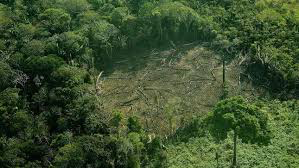

Humans have greatly damaged the forests and trees around our world. The first step to solve this crisis is to learn about it.
Fact 1: Forests cover 30% of the earth's land.
Fact 2: It is estimated that within 100 years there will be no rainforests.
Fact 3: Agriculture is the leading cause of deforestation.
Fact 4: One and a half acres of forest is cut down every second.
The Amazon Rainforest
Deforestation is defined by Britannica as "the clearing or thinning of forests by humans”. In some cases, all the trees in an area are removed, completely destroying the forest. This is called clear-cutting. The main causes for deforestation -- food, firewood, mineral extraction, unsustainable agricultural expansion -- continue growing across the globe.
Some major forest threats include agriculture/farming, illegal logging, mining, and road construction. Forestry practices, wildfires and, in small part, urbanization account for a large portion of deforestation.
Logging operations, for the world’s wood and paper products, destroy countless trees each year. Loggers, some of them acting illegally, also build roads to access more and more remote forests—which leads to further deforestation. Forests are also cut as a result of growing urban sprawl as land is developed for homes.
In some cases, even partial logging and accidental fires thin out the trees enough to change the forest structure dramatically.
Interesting Facts:
References:
https://www.scientificamerican.com/article/deforestation-and-global-warming/
https://www.theguardian.com/environment/deforestation
https://www.nationalgeographic.com/environment/global-warming/deforestation/